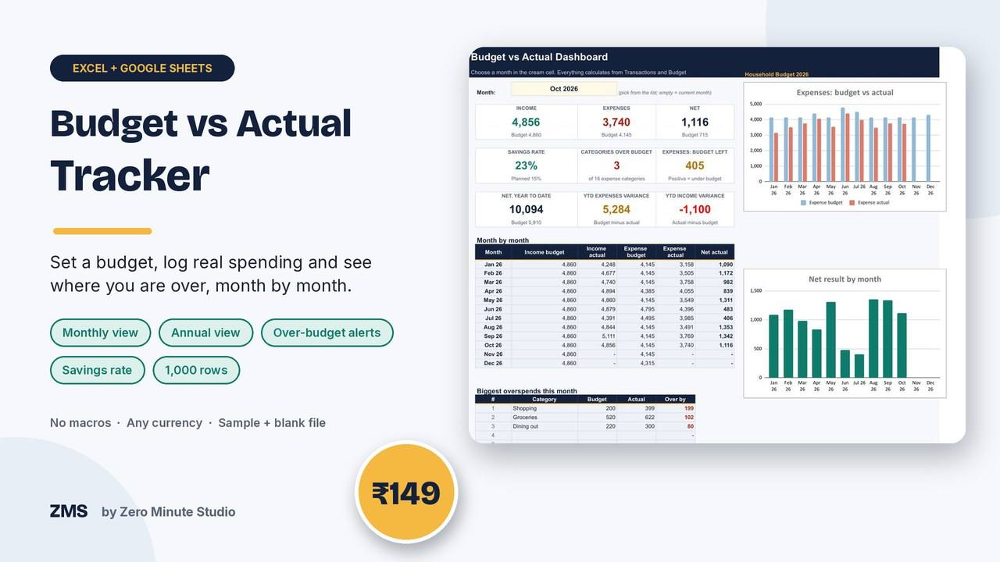
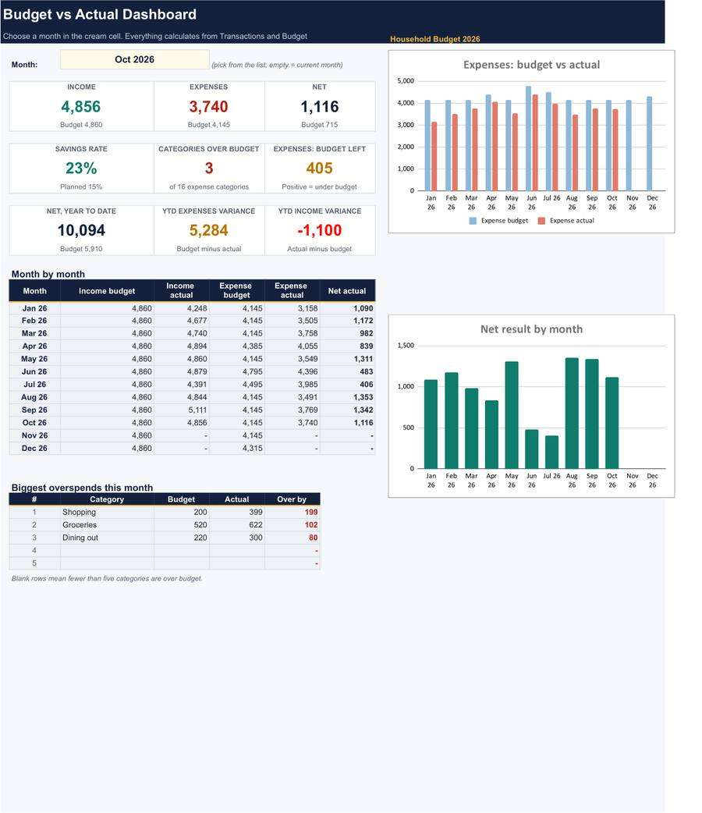
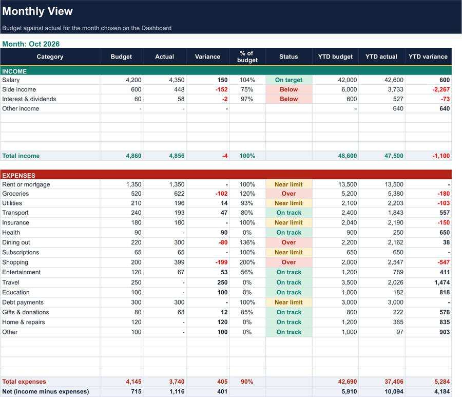

Budget vs Actual Tracker

A budget only helps if you compare it with what really happened. Set a monthly amount for each category, log your spending, and see budget, actual and variance for any month, plus the whole year, so you spot an overspend while you can still fix it.
- Dashboard: pick any month for income, expenses and net against budget, savings rate, year to date and the five biggest overspends
- Monthly View: every category with budget, actual, variance, percent used and status
- Annual tab: 12 months side by side with budget to date and variance
- Budget tab: one amount per category fills all months, override any single month
- Transactions log for up to 1,000 rows, with Income and Expense category lists
- Sample file, blank file and a 2-page Quick Start PDF
Works in Excel 2010+ and Google Sheets. No macros, no add-ins, any currency.
Preview


Buy now: ₹149 (~$1.75)FAQ
What format is it? An .xlsx file for Excel and Google Sheets, plus a PDF guide.
Who is it for? Households, freelancers, small business owners and side hustles that want to see where money goes against a plan.
How do I get it? Instantly after payment. For your own business use; please don't resell the files.
We don't do refund & return ✌️